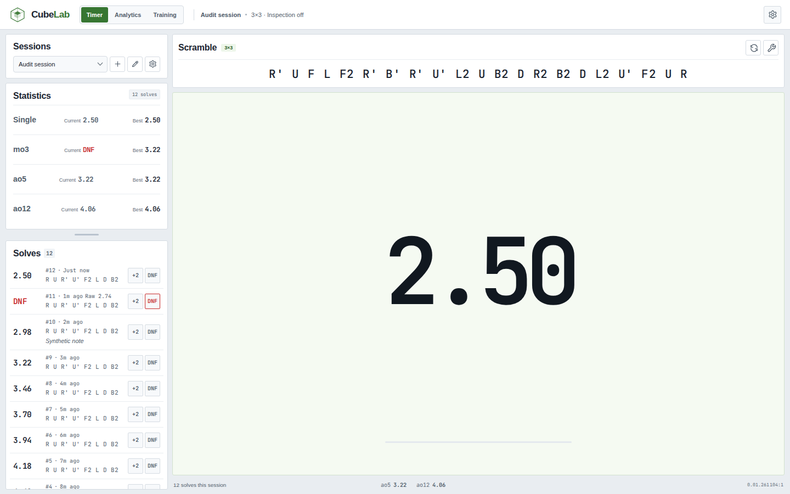
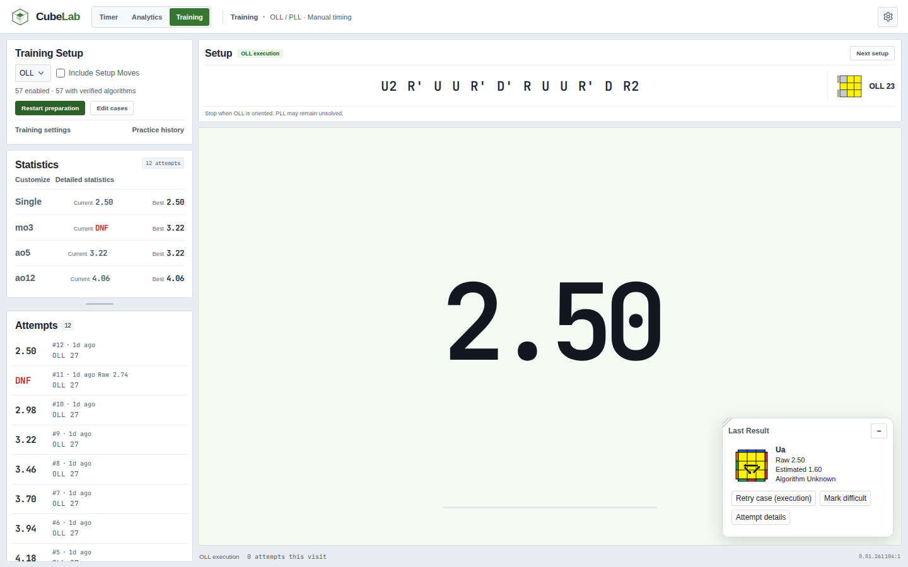
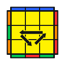
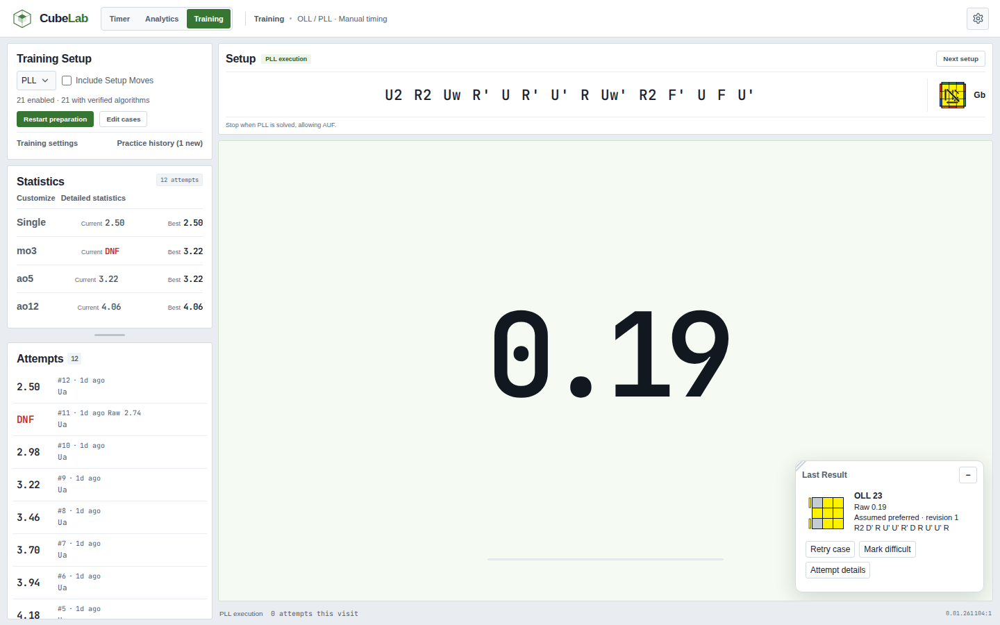
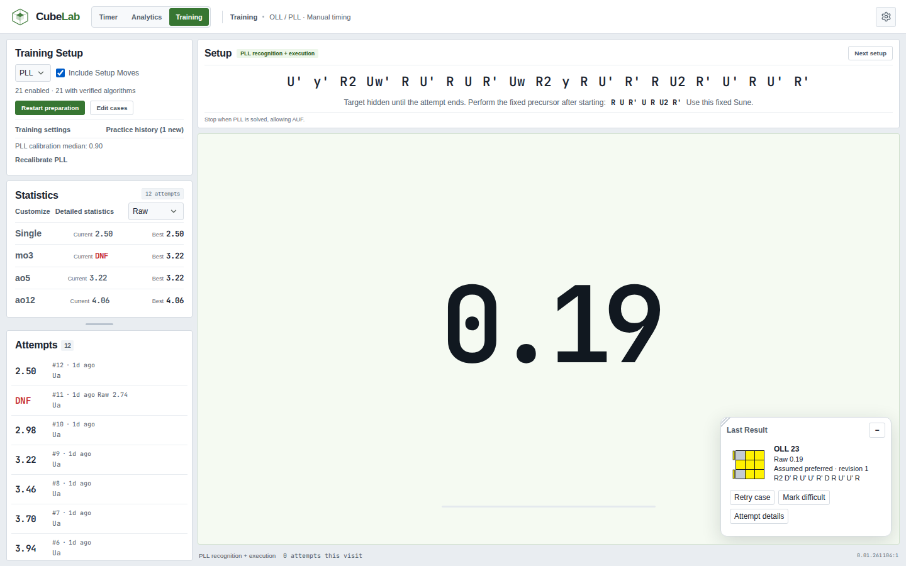
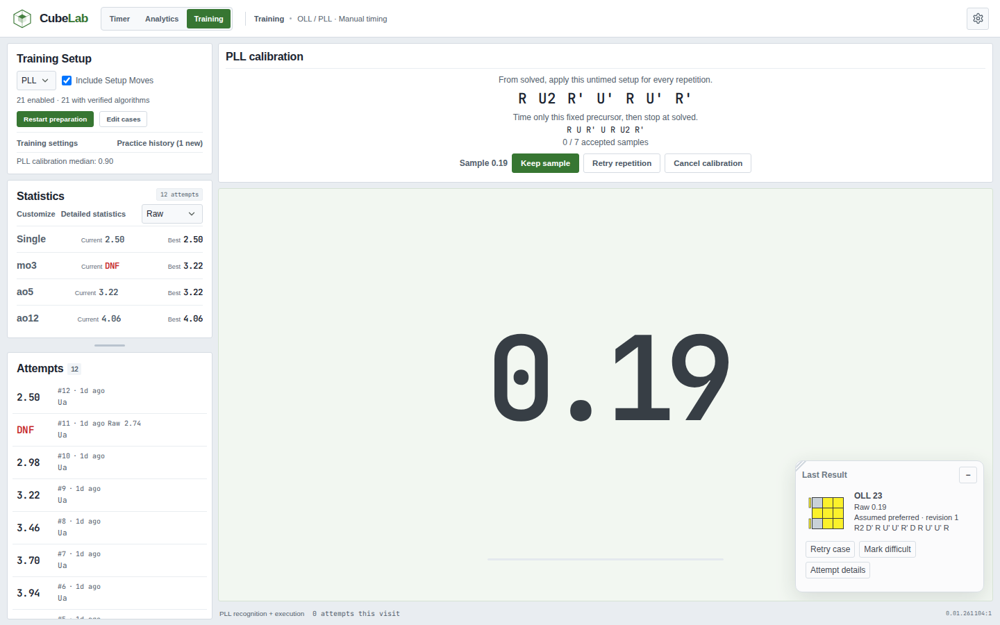
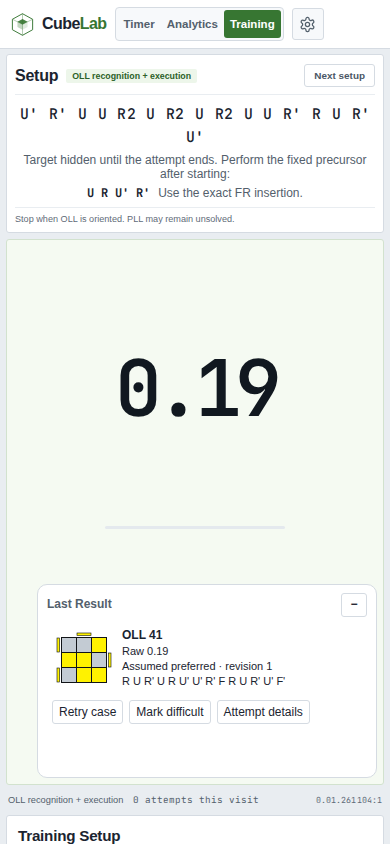

CubeLab Training visual blueprint
Timer is the visual reference. The captures use isolated synthetic data. The proposed layouts are static concepts for review.
Timer and Training today
Same desktop viewport, theme and visible statistic rows. Open a capture at full size by selecting its image.




- Sessions and Training Setup. The shared 296 px rail contains a taller Training control stack.
- Statistics. The first row is shorter in Training. Controls consume space above the same Current/Best columns. At rest both rows have a transparent background. Training’s hover adds a soft surface and keyboard focus adds a 2 px accent outline.
- Solves and Attempts. The first two-line rows have equal measured height, left time position and metadata start. Timer’s inline actions use some of its row width.
- Scramble and Setup. Preview and permanent guidance make Training’s upper panel taller and move the clock down.
- Last Result. Training shares the tool frame and uses a wider default for its extra content.
| Measure | Timer | OLL execution | OLL recognition |
|---|---|---|---|
| Sidebar width | 296.00 | 296.00 | 296.00 |
| Sessions / Training Setup height | 80.59 | 167.53 | 217.47 |
| Statistics height | 267.00 | 235.00 | 218.00 |
| First timing row height | 53.84 | 40.34 | 35.34 |
| First history row height | 46.94 | 46.94 | 46.94 |
| History button width | 204.00 | 263.00 | 263.00 |
| Setup / Scramble height | 98.44 | 132.00 | 142.44 |
| Timer top from viewport | 168.44 | 202.00 | 212.44 |
| Timer digit centre y | 493.72 | 510.50 | 515.72 |
+ Marks the centre of the displayed digits. The proposed desktop frames use the same illustrative anchor across all five modes.
OLL execution
The optional 48 px diagram and case name share the notation row. The compact left rail keeps the case count actionable.
Setup
U2 R’ U U R’ D’ R U U R’ D R2
 OLL 23
OLL 23
Preferred algorithm (assumed)
R U’ R U R U R U’ R’ U’ R2Marker 1 highlights setup instructions. Marker 2 highlights the Training Setup control stack.
OLL recognition
The setup remains primary and the exact FR precursor gets one labelled line. Last Result displays an earlier completed case.

Setup
RecognitionU’ F U R U’ R’ F’ U’ Fw U R U’ R’ Fw’ R U R’ U’
Precursor after start U R U’ R’

Preferred algorithm (assumed)
R U R’ U R U’ U’ R’ F R U R’ U’ F’Marker 1 highlights setup instructions. Marker 2 highlights the Training Setup control stack.
PLL execution
This concept shows Show upcoming case switched off. The notation uses the entire row and the timer centre stays aligned with OLL execution.


Setup
U2 R2 Uw R’ U R’ U’ R Uw’ R2 F’ U F U’
Preferred algorithm (assumed)
R U R’ U R U’ U’ R’ F R U R’ U’ F’Marker 1 highlights setup instructions. Marker 2 highlights the Training Setup control stack.
PLL recognition
The fixed Sune replaces the FR precursor. The earlier OLL result remains available with an explicit execution destination for Retry.


Setup
RecognitionU’ y’ R2 Uw’ R U’ R U R’ Uw R2 y R U’ R’ R U2 R’ U’ R U’ R’
Precursor after start R U R’ U R U2 R’
Preferred algorithm (assumed)
R U R’ U R U’ U’ R’ F R U R’ U’ F’Marker 1 highlights setup instructions. Marker 2 highlights the Training Setup control stack.
PLL calibration
Two steps and the seven-sample progress share the setup shell. Sample review sits in the stage’s lower action area, leaving the readout position stable.


PLL calibration
Preferred algorithm (assumed)
R U R’ U R U’ U’ R’ F R U R’ U’ F’Marker 1 highlights setup instructions. Marker 2 highlights the Training Setup control stack.
Mobile Training
Last Result docks below the clock. The sidebar stacks after the primary workspace. Scroll within the proposed frame to see Training Setup, Statistics and Attempts.


Setup
RecognitionU’ R’ U U R2 U R2 U R2 U U R’ R U R’ U’
Precursor after start U R U’ R’
Preferred algorithm (assumed)
R U R’ U R U’ U’ R’ F R U R’ U’ F’Marker 1 highlights setup instructions. Marker 2 highlights the docked result.
The desktop concept draws the existing 296 px rail, 8 px workspace gap, 272 × 190 px Last Result and 12 px floating inset. The sample track dimensions illustrate alignment. Implementation should derive setup minimums from the existing toolbar and wrapped notation at each breakpoint.